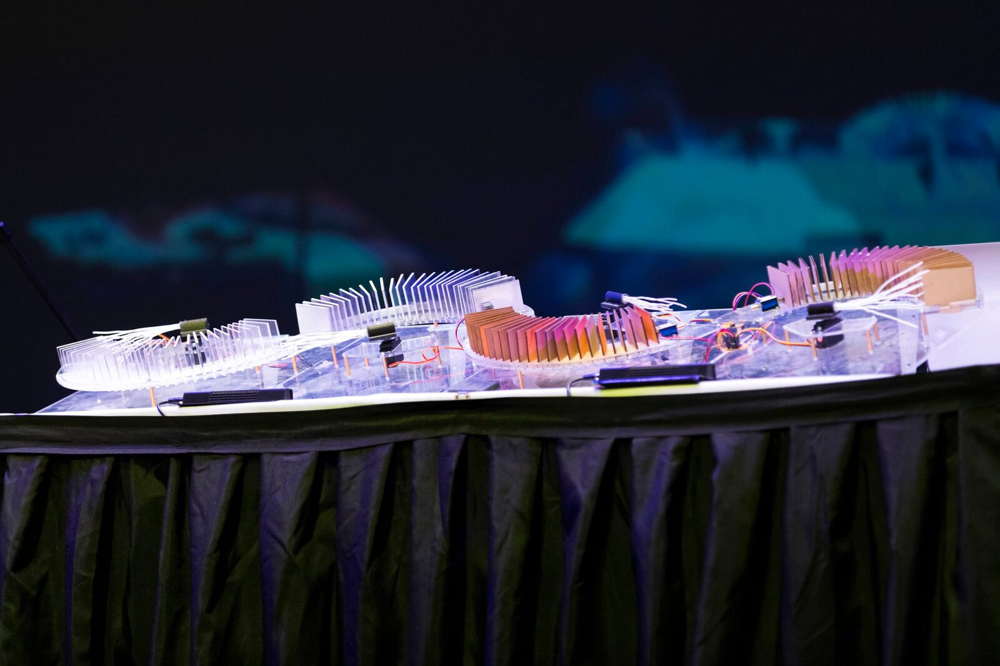
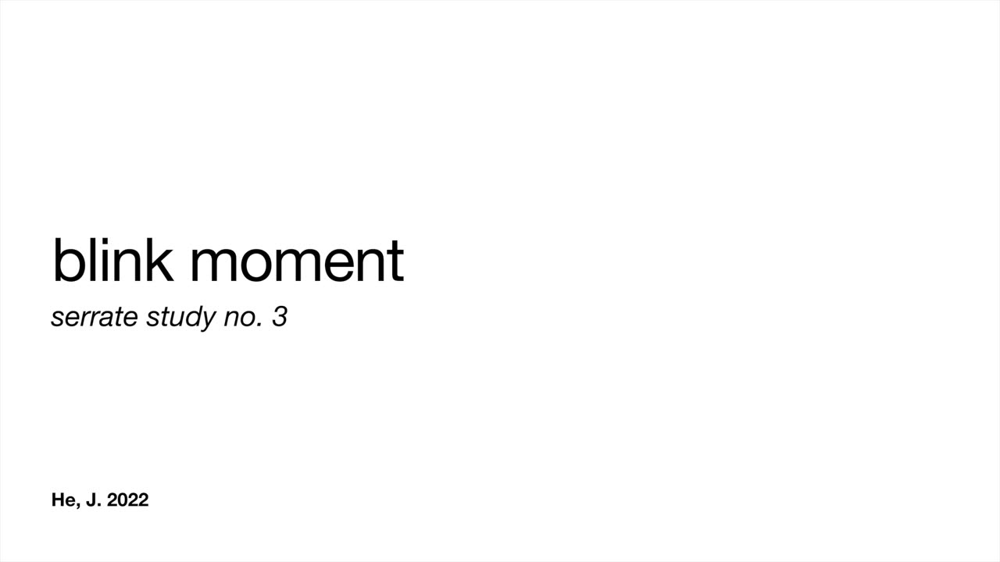

blink moment
blink moment
Author(s)
Jingyin (Jon) He, Massey University
Jingyin (Jon) He is an experimental sound and integrated media artist, and researcher. He explores the frontiers of sonic expression and experience within a hybridized culture of sound and music computing. Jon’s works draw upon ancient sonic practices and bring ancient sound worlds to contemporary practice through re-visioning them as gestural controllers and mechatronic sound devices for live performances and installations.
Description
A record of Mahasangha Vinaya translated in Taisho Triptaka (1425) reveals the intuition and early understanding of the concept and value of time — in multiple/ submultiple of 20, smallest unit, niàn (念) at 18 ms, shùnqǐng (瞬顷) at 360 ms, tánzhǐ (弹指) at 7200 ms, luóyù (罗豫) at 2 minutes 24 seconds, and xūyú (须臾) at 48 minutes.
blink moment is an acoustic re-visioning of ancient time units mediated by mechatronic sound machines. This work utilizes ancient time units to formalize musical events and actuations timings of serraE, a novel mechatronic sound machine inspired by the Chinese yǔ (敔), an ancient scraper-class percussion used to indicate time in ancient Chinese court and ritual music [1]. Through the re-visioning of ancient time units as musical time duration(s), blink moment demonstrates the relationship between elapsed time and sonic characteristics. The duration of the piece is 2’ 24” ( luóyù, 罗豫).
niàn, shùnqǐng, and tánzhǐ were used as rhythmic time values for actuating the percussive hit as well as the radial rasping motion of serraE. This renders a stream of percussive and ratcheting tones, embellishing a constant tone of 55.5555 Hz sine wave (audification of niàn) generated by a loudspeaker. These acoustical renderings are juxtaposed against the ancient Chinese value of second at 144 ms (percussive tone by serraE), and the modern unit of second at 1000 ms (silent). The modern second is not acoustically manifested as the intuition of a modern second elapsing is assumed to be inherent.
blink moment is part of a series of works for serraE to explore its creative affordances as a sound machine in different creative contexts.


serraE at the Sounds of Our Ancestors Performance, Te Papa Museum, Feb 2019.
Media
For best viewing experience, please use headphones.

▶Acknowledgments
This work was supported by Massey University.
Citations
- ↩He, J. (2019, July). serraE: Re-Visioning the Chinese Yu as Mechatronic Musical Instruments Towards Revitalization and Preservation. Proceedings of 2019 International Conference on Computation, Communication, Aesthetics, and X.